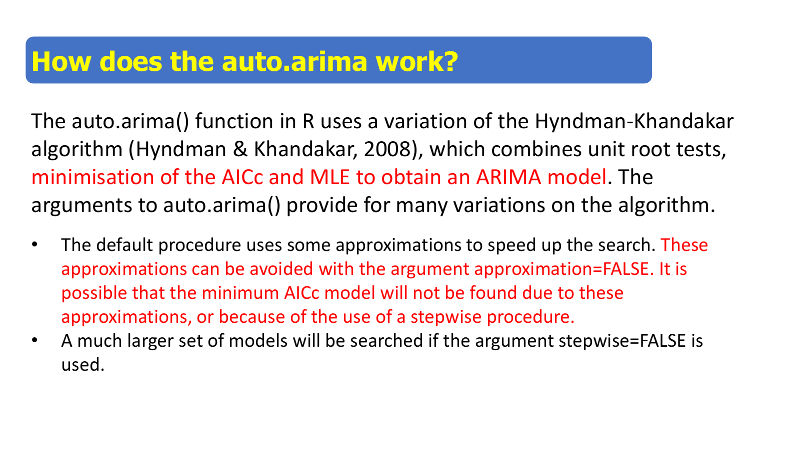
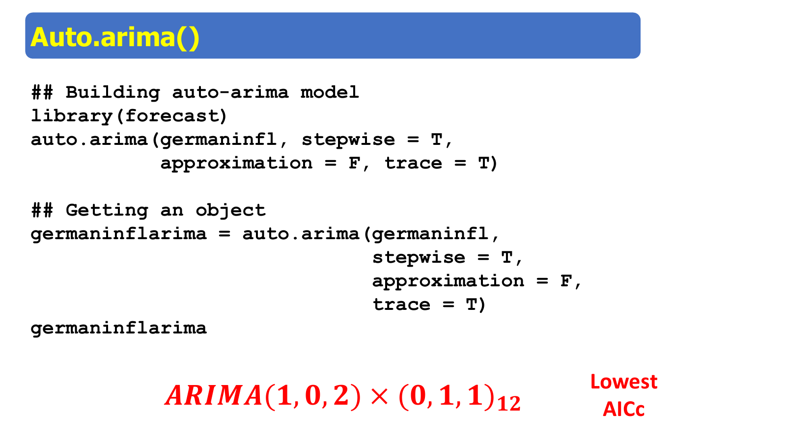
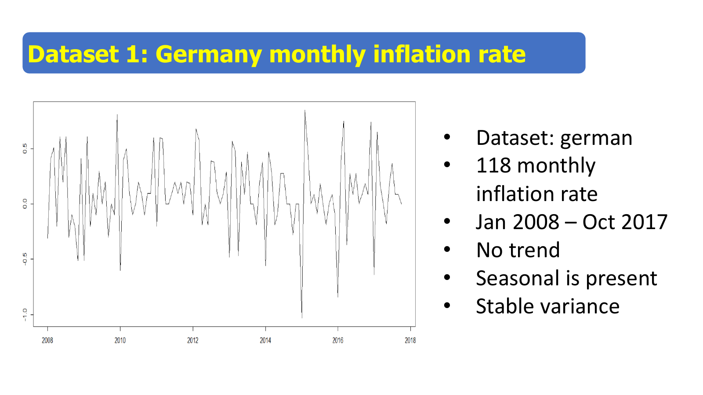
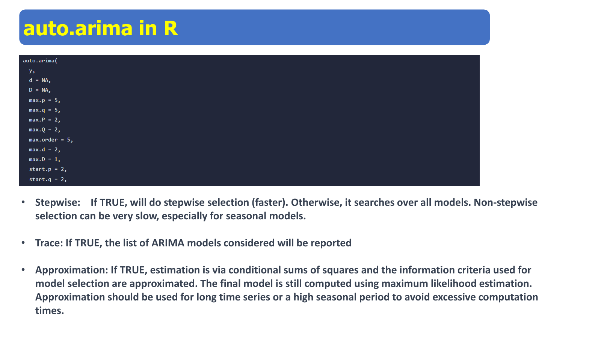
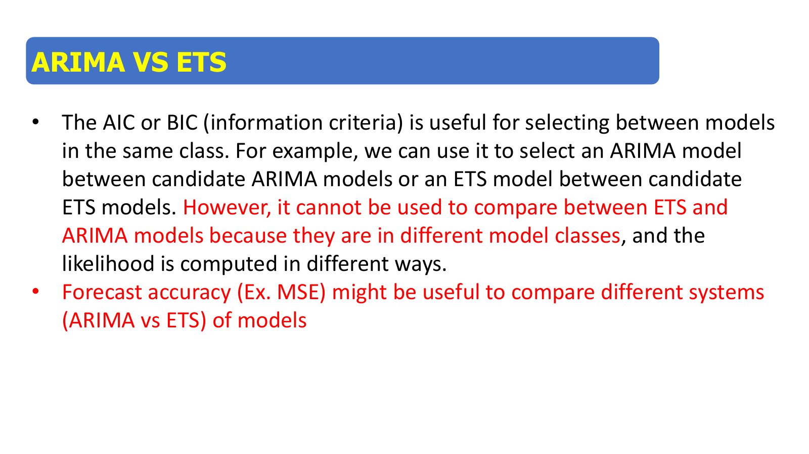
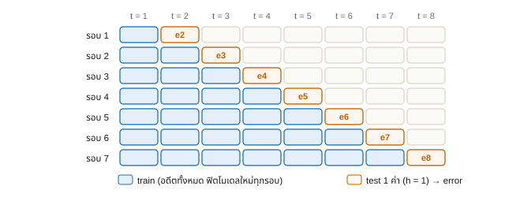
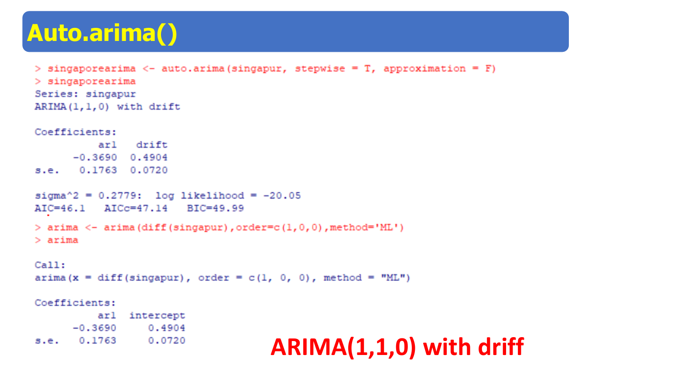
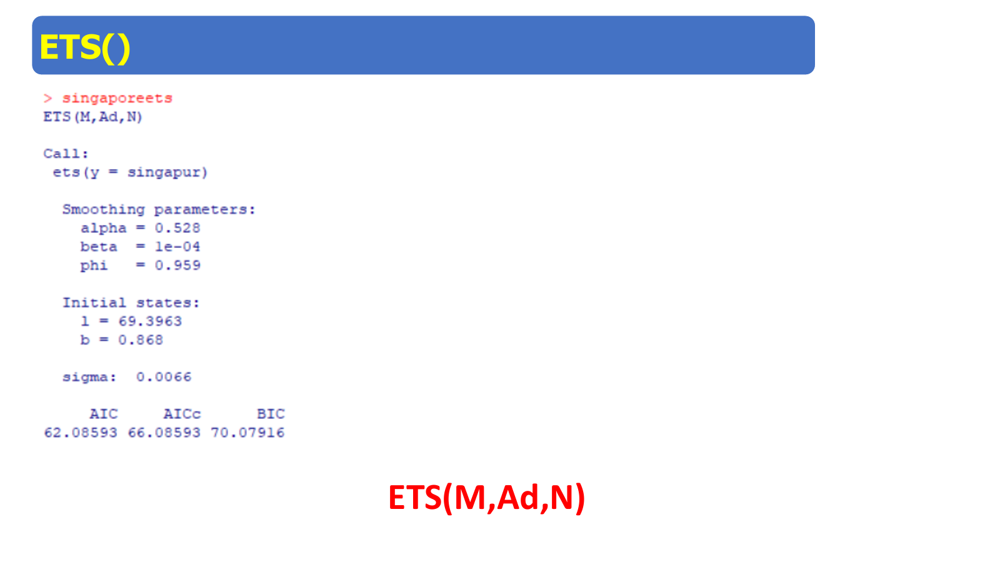
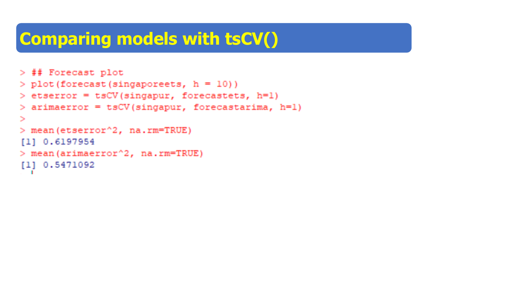
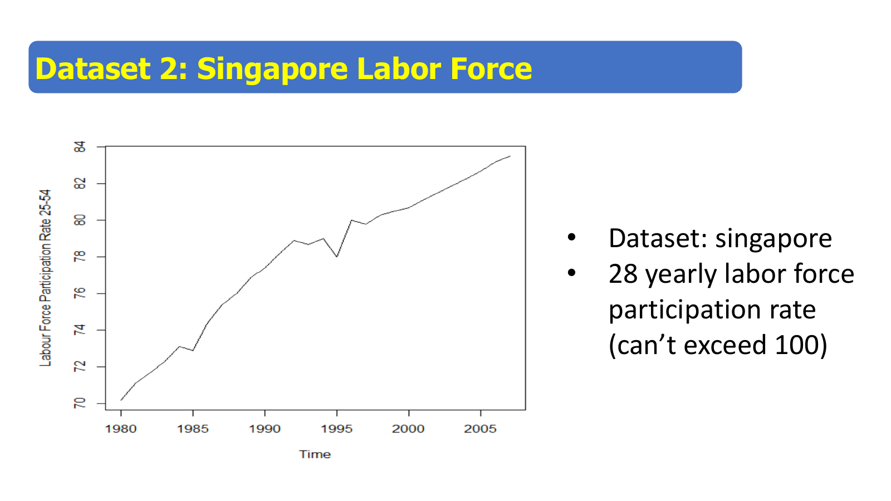

สไลด์ต้นฉบับของตอนนี้ (หน้า 1–3)



Slide 9 หน้า 1–16 — Full data analysis with auto.arima() and ETS()
Lesson 7–9 เลือก p, d, q, P, D, Q ด้วยการดูกราฟและตาราง AIC ซึ่งเป็น "subjective approach" ของสมัยก่อน บทนี้คือวิธีที่ใช้จริงและเป็นแนวของข้อสอบภาคปฏิบัติ: ให้ auto.arima ค้นโมเดล ให้ ETS เป็นคู่แข่ง แล้วตัดสินด้วยความแม่นยำของการพยากรณ์
| ตอน | คำถามที่ตอบ | เครื่องมือหลัก |
|---|---|---|
| 1 | auto.arima ทำอะไรแทนเรา และอะไรที่ยังต้องทำเอง | AICc, เจ็ดขั้นของการวิเคราะห์ |
| 2 | อ่าน output ของ auto.arima และเขียนโมเดลอย่างไร | german inflation, checkresiduals |
| 3 | ETS กับ ARIMA เกี่ยวกันอย่างไร เทียบกันด้วยอะไร | ตารางความเทียบเท่า, ห้ามเทียบ AIC ข้ามตระกูล |
| 4 | เทียบโมเดลต่างตระกูลอย่างยุติธรรมอย่างไร | tsCV (rolling forecast origin) |
| 5 | drift คืออะไร และทำไมการใส่ d ในคำสั่งต้องระวัง | Singapore, ARIMA(1,1,0) with drift |
Lesson 7 สร้างตาราง AIC 4×4 ด้วยมือแล้วเลือกช่องที่ต่ำสุด auto.arima ทำแบบเดียวกัน แต่ค้นได้กว้างกว่า รวม d, D และส่วน seasonal และ "ช่วยชีวิต" จากการลองผิดลองถูก
สไลด์ชุดนี้ทำมานานตั้งแต่ยังไม่มีคำสั่ง auto.arima1 algorithm ของ Hyndman และ Khandakar (2008) รวมสามอย่างที่เรียนมาแล้ว
| auto.arima ทำ | ด้วยอะไร | ทำมือแบบเดิมที่ |
|---|---|---|
| เลือก d และ D | unit root test | ACF ลดช้า, ADF (Lesson 7 ตอน 3.1–3.2) |
| เลือก p, q, P, Q | หา AICc ต่ำสุดและใช้ MLE เพื่อได้โมเดล ARIMA | ตาราง AIC/BIC (Lesson 7 ตอน 3.5) |
| ประมาณพารามิเตอร์ | MLE | Lesson 7 ตอน 5.5 |
AICc คือ AIC ที่บวกค่าปรับเพิ่มสำหรับข้อมูลน้อย จึงแม่นยำกว่า AIC2 เมื่อ n ใหญ่ ส่วนเพิ่มเข้าใกล้ศูนย์ AICc จึงเท่ากับ AIC เป็นสมาชิกตัวที่สามในครอบครัว AIC/BIC ของ Lesson 7 ทั้งสามใช้ −2 ln L ตัวเดียวกัน ต่างกันแค่ค่าปรับ
german ในตอน 2 มี AIC = −2.77, k = 5 (φ, θ₁, θ₂, Θ₁, σ²) และ n = 118 − 12 = 106 หลัง seasonal difference จึงได้ส่วนเพิ่ม \(2(5)(6)/(106-6)=0.6\) และ AICc = −2.17 ตรงกับ output ค่าเดียวกันนี้คิดกลับเป็น log likelihood ได้: \(\ln L=(2k-\mathrm{AIC})/2=(10+2.77)/2=6.38\) ก็ตรงกับ output เช่นกัน
ค่าเริ่มต้นของ auto.arima ใช้การประมาณเพื่อให้เร็ว การประมาณนี้เลี่ยงได้ด้วย approximation=FALSE เพราะอาจไม่เจอโมเดลที่ AICc ต่ำสุดจริง ทั้งจากการประมาณและจากการค้นแบบ stepwise และ AICc ต่ำสุด "ไม่ได้หมายความว่ามันจะดีที่สุด" ต้องตรวจ residual ต่อเสมอ
การวิเคราะห์ข้อมูลทั้งชุดมีเจ็ดขั้น3 ซึ่งก็คือผัง Box-Jenkins ใน Lesson 7
| ขั้น | ทำอะไร | ใครทำ |
|---|---|---|
| 1 | plot และหาค่าผิดปกติ | เรา |
| 2 | ถ้า variance ไม่คงที่ให้ log หรือ Box-Cox | เรา "auto.arima ไม่ transform ให้นะครับ" |
| 3 | difference จนนิ่ง | auto.arima |
| 4 | ดู ACF/PACF | auto.arima |
| 5 | ลองโมเดลด้วย AICc | auto.arima |
| 6 | ตรวจ residual ด้วย ACF และ portmanteau test | เรา "auto.arima ไม่ได้ตรวจสอบ residual ให้" |
| 7 | พยากรณ์ | เรา (forecast()) |
สไลด์สรุปว่า algorithm ของ Hyndman-Khandakar (auto.arima) ดูแลแค่ขั้น 3–5 ถึงจะใช้มัน ขั้นอื่นก็ยังต้องทำเอง4 ขั้น 3–5 คือส่วนที่ไม่ต้องดูกราฟ ACF/PACF หรือตาราง AIC/BIC เองอีกแล้ว5

ตัวอย่างนี้มีไว้ให้เห็นว่า อ่าน trace และ output ของ auto.arima แล้วเขียน SARIMA เต็มรูปแบบได้อย่างไร
german คืออัตราเงินเฟ้อรายเดือนของเยอรมนี ไม่มี trend มี seasonal และ variance คงที่6 (ชุดเดียวกับ Lesson 4) ต้องสร้างด้วย ts(data, start = 2008, frequency = 12) เพื่อให้ R รู้ว่า s = 12 คำสั่ง auto.arima มีอาร์กิวเมนต์สามตัวที่ใช้ทุกครั้ง7
| อาร์กิวเมนต์ | ทำอะไร |
|---|---|
stepwise = TRUE | ค้นแบบเพิ่มหรือลดอันดับทีละขั้น เร็วกว่า เหมือน stepwise variable selection ใน regression ถ้า FALSE จะลองทุกโมเดล ช้ามากโดยเฉพาะ seasonal |
trace = TRUE | แสดงทุกโมเดลที่ลองพร้อม AICc "ไม่ได้จำเป็นขนาดนั้น แต่อยากให้นิสิตเรียนรู้" |
approximation = FALSE | ถ้า TRUE ใช้ conditional sum of squares ระหว่างค้น (โมเดลสุดท้ายยังใช้ MLE) เหมาะกับข้อมูลยาว german สั้นจึงตั้ง FALSE |

trace แต่ละบรรทัดเขียน ARIMA(p,d,q)(P,D,Q)[12] ตามด้วย AICc วงเล็บแรกคือส่วน non-seasonal วงเล็บหลังคือส่วน seasonal8 บรรทัดที่เป็น Inf คือโมเดลที่ฟิตไม่ได้ เมื่อรันจริงได้ ARIMA(1,0,2)(0,1,1)[12] with drift ก่อน แล้วลองตัด drift ได้ AICc ต่ำกว่า จึงเลือกโมเดลที่มี AICc ต่ำสุด
Coefficients:
ar1 ma1 ma2 sma1
-0.7947 0.7786 0.2115 -0.7618
s.e. 0.1201 0.1469 0.1013 0.1291
sigma^2 = 0.04883: log likelihood = 6.38
AIC=-2.77 AICc=-2.17 BIC=10.55
ต้องเขียนโมเดลจาก output ของ auto.arima ให้เป็น การบ้านคือ ARIMA(1,0,2)×(0,1,1)₁₂ ของ german9 ใช้กฎเดียวกับ Lesson 9 ตอน 3.3: AR เป็น "1 ลบ" MA เป็น "1 บวก"
p = 1, d = 0, q = 2, P = 0, D = 1, Q = 1, s = 12 ไม่มี intercept เพราะ D = 1
\(1-\phi_1B=1-(-0.7947)B=1+0.7947B\)
\(1+0.7786B+0.2115B^2\) และ \(1-0.7618B^{12}\)
\((1+0.7947B)(1-B^{12})X_t=(1+0.7786B+0.2115B^2)(1-0.7618B^{12})w_t\) และ \(\hat\sigma=\sqrt{0.04883}=0.221\)
ค่า t ของ ma2 = 0.2115/0.1013 = 2.09 แค่เกิน 2 เล็กน้อย ส่วนตัวอื่นเกิน 5 ทุกตัว AICc ชอบโมเดลนี้ แต่ ma2 คือพารามิเตอร์ที่ "เกือบไม่จำเป็น" การอ่าน coef/s.e. แบบ Lesson 7 ตอน 5.6 ยังใช้ได้กับ output ของ auto.arima
diagnostic ด้วย histogram, QQ plot และ tsdiag ผ่านหมด12 อีกเครื่องมือคือ checkresiduals() ของ package forecast ซึ่งไม่เคยสอนมาก่อน13 มันรวม Ljung-Box หลาย lag เป็นค่าเดียว เรียกว่า portmanteau test "สมัยก่อนทำ Ljung-Box แยกตาม lag หลัง ๆ เริ่มรวมกัน"
Ljung-Box test data: Residuals from ARIMA(1,0,2)(0,1,1)[12] Q* = 15.035, df = 20, p-value = 0.7744 Model df: 4. Total lags used: 24
ใช้ lag 1–24 (สองรอบ seasonal) หัก df ด้วยจำนวนพารามิเตอร์ ARMA 4 ตัว ได้ df = 24 − 4 = 20 ตามสูตร df = H − p − q − P − Q ใน Lesson 8 ตอน 1.4 p = 0.7744 > 0.05 จึงไม่ปฏิเสธ H0 โมเดลเหมาะสม1415
forecast(germaninflarima) ให้ค่าพยากรณ์พร้อมช่วง 80% และ 95% ในวิชานี้ใช้ point forecast เป็นหลัก16 ในคลิปพูดว่าแถบเป็น "85 หรือ 90" แต่ค่าเริ่มต้นของ forecast() คือ 80% และ 95%


สไลด์เริ่มด้วยการแก้ความเชื่อผิด เป็นความเชื่อผิดที่แพร่หลายว่า ARIMA ครอบคลุมกว่า exponential smoothing ความจริงเทียบได้ดังนี้
| ETS | ARIMA | |
|---|---|---|
| ความนิ่ง | ไม่นิ่งทุกตัว | บางตัวนิ่ง (d = D = 0) |
| มีคู่ในอีกตระกูลไหม | linear ETS มีคู่ใน ARIMA, multiplicative (เช่น M,A,M ของ Xbox) ไม่มี | ARIMA ส่วนใหญ่ไม่มีคู่ใน ETS |
| likelihood | state space บนข้อมูลเดิม | ARIMA บนข้อมูลหลัง difference |

ตารางบนสไลด์ (R และ Hyndman ใช้ MA แบบบวก) มีสองแถวแรกที่ต้องจำ17 เพราะเคยออกข้อสอบเก่าแบบ "ให้ output ของ ETS แล้วถาม parameter ของ ARIMA"18
| ETS | ARIMA | พารามิเตอร์ |
|---|---|---|
| ETS(A,N,N) = SES | ARIMA(0,1,1) | θ₁ = α − 1 (คือ α = 1 + θ ใน Lesson 7 ตอน 1.3) |
| ETS(A,A,N) = Holt | ARIMA(0,2,2) | θ₁ = α + β − 2, θ₂ = 1 − α |
| ETS(A,A_d,N) | ARIMA(1,1,2) | φ₁ = φ, θ₁ = α + φβ − 1 − φ, θ₂ = (1 − α)φ |
| ETS(A,N,A) | ARIMA(0,1,m)(0,1,0)ₘ | |
| ETS(A,A,A) | ARIMA(0,1,m+1)(0,1,0)ₘ | |
| ETS(A,A_d,A) | ARIMA(0,1,m+1)(0,1,0)ₘ |
Holt ที่ α = 0.8, β = 0.1 ได้ θ₁ = 0.8 + 0.1 − 2 = −1.1 และ θ₂ = 1 − 0.8 = 0.2 ARIMA ของแถวนี้มี d = 219 ส่วน SES ที่ θ = −0.6 ได้ α = 0.4
α = 0.7851, β = 0.0001 ตารางบอกว่าเทียบเท่า ARIMA(0,2,2) ที่ θ₁ = −1.2148, θ₂ = 0.2149
ได้ θ₁ = −1.0637, θ₂ = 0.0637 ไม่ตรงกับข้อ 1
ทั้งสองชุดแยกตัวประกอบได้เป็น (1 − B)(1 − cB) คือมีราก MA = 1 พอดี (เพราะ β ≈ 0) ตัวประมาณอยู่บนขอบ invertible (Lesson 7 ตอน 4.3) ผลจึงไวต่อวิธีประมาณ

ETS เลือก ETS(A,N,A) ที่ α และ γ เกือบเป็นศูนย์ แปลว่า level และรูปแบบฤดูกาลแทบไม่เปลี่ยนตลอด 10 ปี AIC = 214.7320 ค่าพยากรณ์ "คล้าย ๆ กับ ARIMA"21
เทียบคะแนนสอบสองวิชาที่คะแนนเต็มไม่เท่ากัน 80 จาก 100 กับ 40 จาก 50 บอกไม่ได้ว่าใครเก่งกว่าถ้าไม่แปลงเป็นมาตรฐานเดียวกันก่อน AIC ของสองตระกูลก็เหมือนกัน
AIC/BIC ใช้เลือก ARIMA จากหลาย ARIMA หรือ ETS จากหลาย ETS แต่ใช้เทียบระหว่าง ETS กับ ARIMA ไม่ได้ เพราะอยู่คนละตระกูลโมเดล แม้แต่ AICc ก็เทียบไม่ได้22
| german | ETS(A,N,A) | ARIMA(1,0,2)(0,1,1)[12] |
|---|---|---|
| AIC | 214.73 | −2.77 |
| likelihood คำนวณบน | ข้อมูลเดิม 118 ค่า | ข้อมูลหลัง seasonal difference 106 ค่า |
ต่างกัน 217 หน่วยไม่ได้แปลว่า ARIMA ดีกว่า สิ่งที่ใช้แทนคือ ความแม่นยำของการพยากรณ์ (เช่น MSE) ใช้เทียบโมเดลต่างระบบ (ARIMA กับ ETS) ได้ เหตุผลเดียวกันใช้กับ ARIMA ที่ d ต่างกัน (Lesson 7 ตอน 3.3, Lesson 9 ตอน 5.3) และกับข้อมูลที่ log ต่างกัน
เทียบไม่ได้ เพราะ likelihood ของสองตระกูลคำนวณต่างกัน (ARIMA บนข้อมูลหลัง difference, ETS บนข้อมูลเดิมแบบ state space) ต้องเทียบด้วย MSE/RMSE จาก tsCV หรือ test set



แต่ละแถวคือหนึ่งรอบ ช่องฟ้าคืออดีตทั้งหมดที่ใช้ฟิตโมเดลใหม่ ช่องส้มคือจุดถัดไปที่พยากรณ์แล้วเก็บ error ไว้ จุดแรกไม่มี error จึงเป็น NA ใน R ต้องใส่ na.rm = TRUE ความแม่นยำคือค่าเฉลี่ยของ error ทั้งอนุกรม
| train/test split (Lesson 2) | tsCV | |
|---|---|---|
| จำนวน error | เท่าขนาด test set | เกือบทุกจุดของอนุกรม |
| ฟิตโมเดล | ครั้งเดียว | ใหม่ทุกรอบ จึงรันนาน 5–10 นาที |
| ใช้อนาคตไหม | ไม่ | ไม่ (ใช้เฉพาะอดีต) |
ในคลิปเรียกวิธีนี้ว่า "leave one out cross validation"23 แต่ leave-one-out ใน cross-sectional ตัดจุดใดก็ได้ออก ส่วน tsCV ใช้เฉพาะอดีตพยากรณ์อนาคต ซึ่งถูกต้องสำหรับอนุกรมเวลา เพราะในงานจริงไม่มีข้อมูลอนาคตให้ใช้ และต้องใช้ h = 124

โค้ดสร้างฟังก์ชันพยากรณ์สองตัวแล้วส่งให้ tsCV เรียกซ้ำทุกจุด ตัวหนึ่งฟิต ets(x) อีกตัวฟิต auto.arima(x) ใหม่ทุกรอบ แล้ว mean(error^2, na.rm = TRUE) คือ MSE ผลคือ MSE ETS = 0.09074 และ MSE ARIMA = 0.07700 ARIMA ต่ำกว่าราว 15% จึงชนะ25
RMSE ของ ARIMA คือ √0.077 = 0.278 ใหญ่กว่า σ̂ = 0.221 ที่ได้จากการฟิตข้อมูลทั้งหมด error นอกตัวอย่างจึงใหญ่กว่าในตัวอย่าง ซึ่งเป็นปกติ เพราะ σ̂ วัดจากข้อมูลที่โมเดลเห็นแล้ว
forecastets <- function(x, h) forecast(ets(x), h = h)
forecastarima <- function(x, h) forecast(auto.arima(x), stepwise = T, approximation = F, h = h)
etserror <- tsCV(germaninfl, forecastets, h = 1)
arimaerror <- tsCV(germaninfl, forecastarima, h = 1)
mean(etserror^2, na.rm = TRUE); mean(arimaerror^2, na.rm = TRUE)ในโค้ดของสไลด์ stepwise, approximation ถูกส่งให้ forecast ไม่ใช่ auto.arima จึงไม่มีผล รันซ้ำด้วย forecast เวอร์ชันปัจจุบันได้ ETS 0.0863 และ ARIMA 0.0770 ข้อสรุปเหมือนเดิม

ตัวอย่างนี้มีไว้ให้เห็นว่า drift คือ intercept ของผลต่าง และการใส่ d ในคำสั่ง arima แบบเปล่า ๆ ทำให้ drift หายไป ซึ่งเปลี่ยนค่าพยากรณ์ได้มาก
ข้อมูลคืออัตราการมีส่วนร่วมในกำลังแรงงานอายุ 25–54 ปีของสิงคโปร์ รายปี เพิ่มขึ้นต่อเนื่องและเกิน 100 ไม่ได้ ไม่มี seasonal และสั้นมาก (28 ค่า)26

auto.arima ได้ ar1 = −0.369 และ drift = 0.4904 ซึ่ง drift คือ intercept ของผลต่าง27 เขียนได้ \(\nabla X_t-0.4904=-0.369(\nabla X_{t-1}-0.4904)+w_t\) คืออัตราเพิ่มเฉลี่ย 0.49 จุดต่อปี แบบเดียวกับ intercept 0.0049 ของอุณหภูมิใน Lesson 8 สไลด์แสดงว่าได้ค่าเดียวกับ arima(diff(singapur), order = c(1,0,0))

ETS เลือก ETS(M,Ad,N) คือ error คูณ trend บวกแบบ damped (Lesson 4) หรือ double exponential smoothing แบบ damped28 φ = 0.959 ทำให้ค่าพยากรณ์ค่อย ๆ โค้งเข้า เหมาะกับข้อมูลที่มีเพดาน 100

MSE ETS = 0.6198 และ MSE ARIMA = 0.5471 ARIMA ชนะอีกครั้ง29 แต่ข้อมูลมีแค่ 28 ค่า และรอบแรก ๆ ของ tsCV ฟิตโมเดลจากข้อมูลเพียงไม่กี่ค่า ความต่างนี้จึงไม่แน่นอนนัก
ar1 = 0.2225 ไม่มี drift พยากรณ์ 83.57, 83.58, 83.58 เกือบราบ
ar1 = −0.369, intercept 0.4904 ได้ค่าพยากรณ์ของผลต่าง "ตรงนี้จะกลายเป็น 100" ถ้าไม่ undifference
diffinv(..., xi = singapur[28]) เริ่มจาก 83.5 ได้ 84.06, 84.53, 85.03 เท่ากับ auto.arima with drift
| วิธี | มี drift | พยากรณ์ได้ค่า X ทันที |
|---|---|---|
arima(x, c(1,1,0)) | ไม่มี | ใช่ |
arima(diff(x), c(1,0,0)) | มี (intercept) | ไม่ ต้อง diffinv เอง |
Arima(x, c(1,1,0), include.drift = TRUE) หรือ auto.arima | มี | ใช่ |
ข้อสรุปท้ายคลิปคือใส่ d ในคำสั่งดีกว่า diff เองก่อน3132 (เรื่องเดียวกับ Lesson 8 ตอน 2.4) แต่ถ้าข้อมูลมี trend ชัด ต้องตรวจว่าต้องมี drift หรือไม่ แถวสุดท้ายของตารางได้ทั้งสองอย่าง

ไฟล์ R_codes.txt, german.txt และ singapore.txt อยู่ในโฟลเดอร์ CLASS 9 ต้องโหลด package forecast ลองฝึกต่อในแบบฝึก Lesson 10 หรืออ่านต่อ Lesson 11 — Multivariate time series
ตัวเลขยกในเนื้อหาชี้มาที่รายการนี้ แต่ละรายการระบุคลาสและนาทีของคลิป พร้อมถ้อยคำในคลิปเมื่อมี
| หน้า | เนื้อหา | อยู่ในตอน |
|---|---|---|
| 1–3 | ปก, auto.arima, เจ็ดขั้น | ตอน 1 |
| 4 | German inflation | ตอน 2 |
| 5 | ARIMA VS ETS | ตอน 3 |
| 6–7 | อาร์กิวเมนต์และผล auto.arima | ตอน 2 |
| 8–10 | ETS(A,N,A), ARIMA VS ETS, AIC ข้ามตระกูล | ตอน 3 |
| 11–12 | tsCV | ตอน 4 |
| 13–16 | Singapore | ตอน 5 |
| 17–77 | Multivariate time series | etc — สอนใน Lesson 11 |
แหล่งอื่นที่ใช้: Class 9-2 ช่วง 0:31–1:17 (ตอน 1–5), ไฟล์ R_codes.txt, german.txt และ singapore.txt (CLASS 9), sales.txt (CLASS 4)